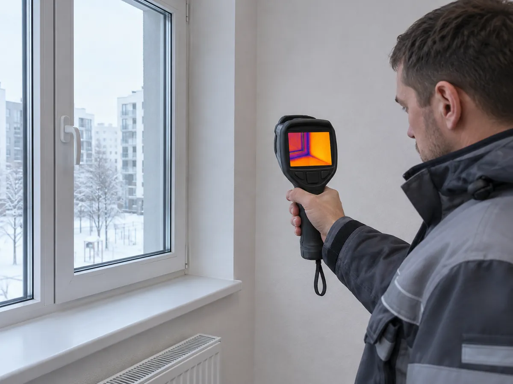
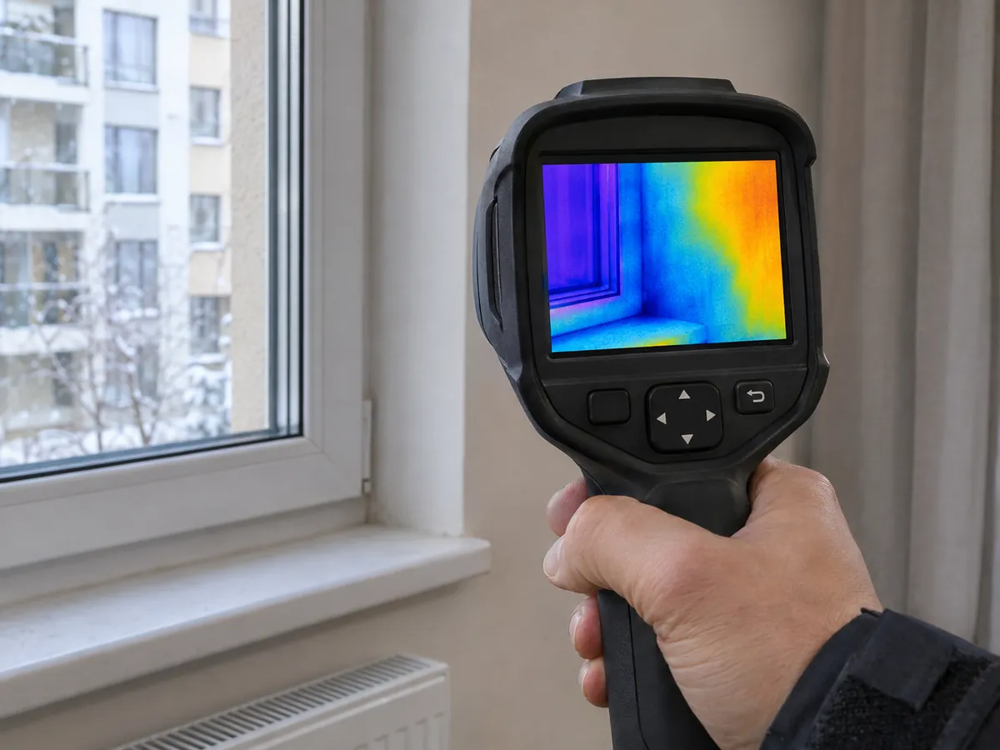
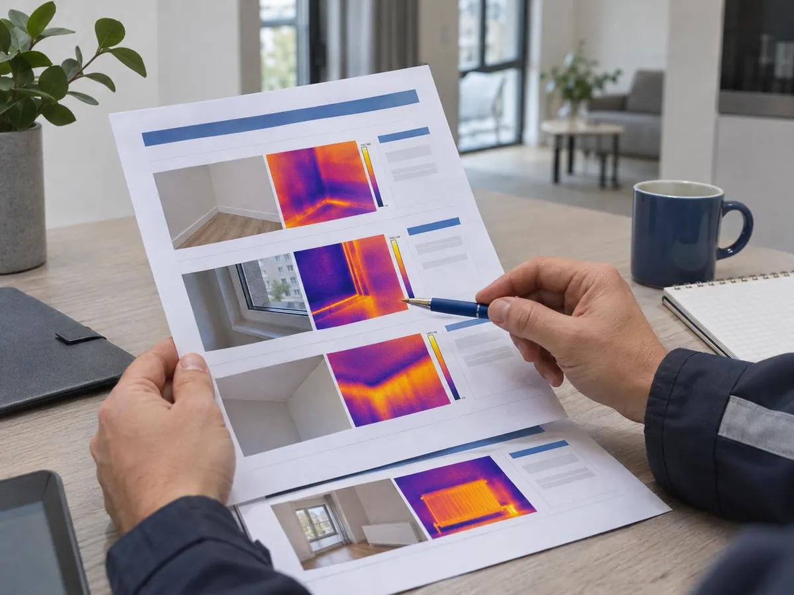

Зафиксировать температурные зоны
Сохранить термограммы и описание участков, которые отличаются по температуре.
Заключение входит в тепловизионный осмотр. В нём фиксируют термограммы, описывают температурные зоны и приводят рекомендации.

Сохранить термограммы и описание участков, которые отличаются по температуре.
Описать возможные теплопотери, промерзание, продувание или неоднородность утепления.
Использовать результаты осмотра при планировании дополнительной технической проверки.

Во время осмотра фиксируют распределение температуры на доступных поверхностях стен, окон, потолков, полов и инженерных узлов.
Заключение входит в услугу тепловизионного осмотра и включает термограммы, описание выявленных зон и рекомендации.

Отопление должно работать, а разница температур внутри и снаружи — быть достаточной для сравнения поверхностей. Перед осмотром не проветривайте помещение и оставьте доступ к участкам, которые нужно проверить.
В документе фиксируют термограммы, описывают выявленные температурные зоны и приводят рекомендации по дальнейшим действиям.
В отопительный период, когда работает отопление, есть достаточная разница температур внутри и снаружи, а поверхности доступны для обзора. Перед проверкой не проветривайте помещение и не открывайте окна.
Нет. Камера показывает распределение температуры и помогает увидеть зоны, требующие внимания, но сама по себе не устанавливает техническую или юридическую причину.
Роль документа зависит от задачи, других материалов и обстоятельств спора. Он сам по себе не определяет исход дела; требования к документам и доказательствам стоит обсудить с профильным юристом.
Да. Заключение с термограммами, описанием температурных зон и рекомендациями входит в услугу. Стоимость осмотра зависит от типа квартиры — посмотрите условия и цены тепловизионного осмотра.
Заключение с термограммами, описанием температурных зон и рекомендациями входит в услугу.